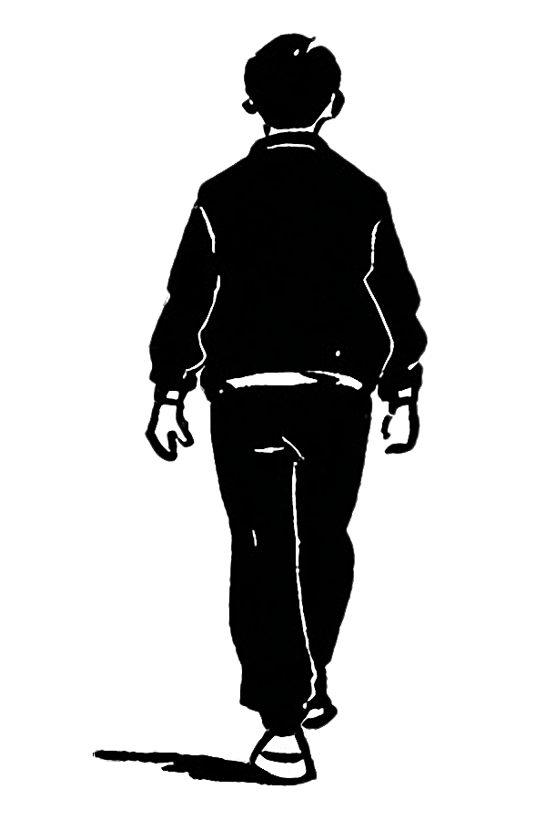
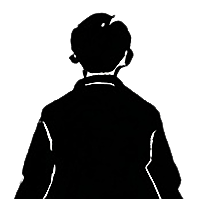

As I compared the tower clock with my watch I realized that it was already much later than I had thought, I had to hurry,


the shock of this discovery made me unsure of the way, I did not yet know my way very well in this town;
give up
look for help